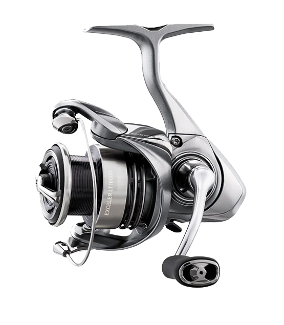

ReelCalc Reel Setup Guide
Daiwa Exceler LT 5000D-C Line Capacity & Reel Setup Guide
The Daiwa Exceler LT 5000D-C (EXELT5000D-C) is a 5000-size spinning reel. It weighs 8.1 oz, brings in 34.5 inches of line with each handle turn, and has a listed maximum drag of 26.4 lb. For fishing in current, allow enough line for your cast or drift with some left for a fish's run.